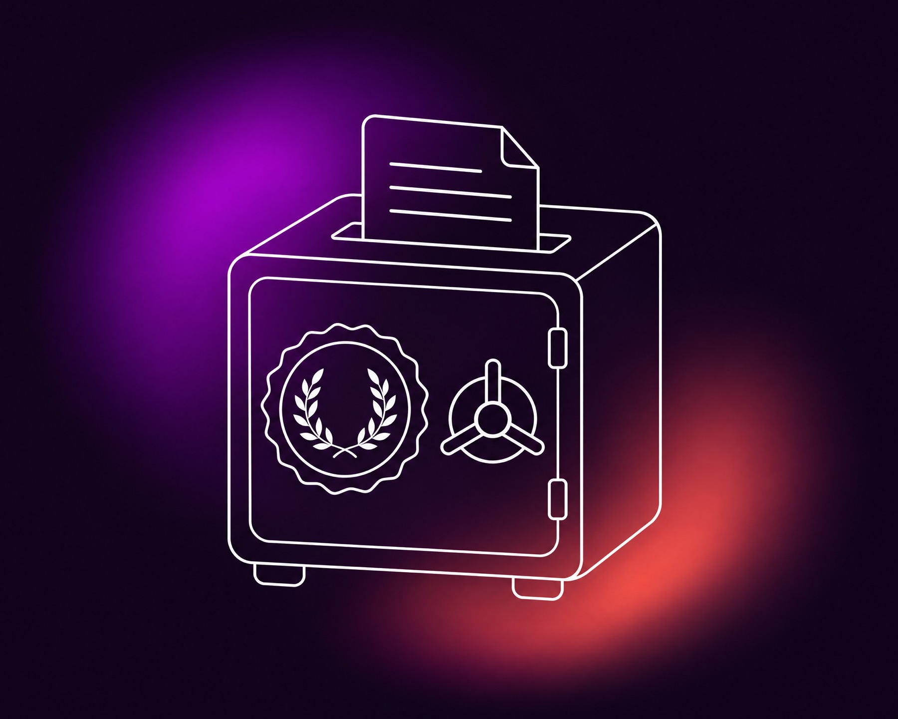

Traducción que se acepta a la primera
Traducción pericial y especializada para documentos médicos, farmacéuticos, legales, financieros y técnicos. 100% humana o híbrida (IA + revisión experta), con validez oficial cuando el trámite lo exige.
Agenda una cita30% de descuento en tu primer proyecto. Confidencialidad desde el primer contacto. No traducimos documentos personales.
Del documento al entregable, con un solo proveedor
Cuatro soluciones de traducción escrita, un proceso de control de calidad y la terminología de tu empresa, de un proyecto a otro.
Cotiza tu proyectoTraducción híbrida optimizada. Proyectos extensos, muy urgentes y/o con presupuestos reducidos sin omisiones ni incongruencias.
Cotizar con Tradmagia®Inteligencia Artificial + revisión Humana. Bases de datos, manuales técnicos, expedientes de productos farmacéuticos y reportes de ensayos clínicos.
Cotizar con TradIAH®Traducción 100% humana. Documentos legales, materiales de marketing y textos para publicación con apego estricto a glosarios.
Cotizar con Expertos en tu sectorTraducción certificada (CDMX). Traducciones que deben ser avaladas por peritos autorizados por el Consejo de la Judicatura Federal o el Tribunal Superior de Justicia de la CDMX.
Cotizar con Perito traductorRevisión por un segundo traductor con más de 15 años de experiencia y/o formación en traducción, medicina, química, farmacobiología, ingenierías, derecho o finanzas.
Cotizar con Control de calidadCorrección o maquetación del formato final: encabezados, pies de página, figuras, tablas de contenido, referencias cruzadas e hipervínculos.
Cotizar con Maquetación espejoApego a tus glosarios bilingües y materiales de referencia, y entrega de las memorias de traducción de tu proyecto.
Cotizar con Glosarios y memorias72% · entrega estimada en 24 h
- ✓Capítulo 1 · Seguridad
- ✓Capítulo 2 · Instalación
- ✓Capítulo 3 · Operación
- Capítulo 4 · Mantenimiento
- Capítulo 5 · Solución de problemas
ORIGINAL · EN
The recommended dosage is one tablet daily. Store below 25 °C. Keep the shelf life indicated on the label.
TRADUCCIÓN · ES
La posología recomendada es una tableta al día. Consérvese a menos de 25 °C. Respete la vida útil indicada en la etiqueta.
Los participantes recibirán el excipiente en la visita 2, conforme al cronograma del estudio…
El investigador registrará cualquier evento adverso en el cuaderno de recogida de datos.
Ajustar “excipient” → “excipiente” según glosario del patrocinador.
✓ Resuelto
CONTRATO DE SUMINISTRO
TRADUCTOR
TSJ · CDMX
- ✓Lectura final del traductor
- ✓Corrección ortotipográfica y de traducción
- ✓Revisión por segundo traductor (+15 años)
- ✓Validación terminológica con glosarios
- 5Corrección y maquetación del formato
ORIGINAL · EN
TRADUCCIÓN · ES
| Término | Traducción aprobada | |
|---|---|---|
| adverse event | evento adverso | ✓ |
| batch record | registro de lote | ✓ |
| informed consent | consentimiento informado | ✓ |
| shelf life | vida útil | ✓ |
| governing law | ley aplicable | ✓ |
Hecho para cada sector regulado
Del departamento jurídico al laboratorio, traducimos para quienes no pueden darse el lujo de un rechazo.
Cuando un documento termina en un juzgado, una dependencia de gobierno o una autoridad reguladora, una traducción simple no basta: debe estar avalada por un perito traductor autorizado.
Andromeda para legal y pericial Registros COFEPRISPara obtener licencias y registros sanitarios, la autoridad exige la documentación en español. Un término inconsistente entre documentos puede detener un trámite completo.
Andromeda para registros COFEPRIS Investigación clínicaUn protocolo o un consentimiento informado no admite ambigüedad: la seguridad del estudio y la aprobación de los comités dependen de que cada término sea exacto.
Andromeda para investigación clínica Finanzas y auditoríaLos reportes financieros llegan con fechas límite y reguladores esperando. Una cifra mal referida o un término ambiguo puede reabrir una revisión completa.
Andromeda para finanzas y auditoría Manuales técnicosCada línea de producción, cada producto importado o exportado y cada auditoría de calidad genera documentación que alguien tiene que traducir, y rápido.
Andromeda para manuales técnicosLa confianza que exige un corporativo
Desde 2002 traducimos desde comunicados internos hasta contratos, patentes y proyectos regulatorios para 16 de las 20 farmacéuticas más importantes del mundo.
CJF · TSJ
Hecho para pasar la revisión de Cumplimiento, no solo para salir del paso
Doble revisión, validación terminológica y confidencialidad operativa en cada proyecto, con validez pericial cuando el trámite lo exige.
Cómo trabajamos
Tu información se queda protegida
Manejo de información sensible con control y claridad de proceso para Legal, Cumplimiento y Finanzas.
Dos traductores en cada proyecto
Un especialista traduce y un segundo traductor con más de 15 años de experiencia revisa.
Terminología validada por expertos
Bases terminológicas y glosarios creados con el apoyo de expertos del sector.
Garantía, no promesas
Corregimos cualquier error sin costo o reembolsamos ante una inconformidad persistente.
Validez oficial cuando se requiere
Sello y firma de perito autorizado por el CJF o el TSJ de la CDMX.
Preguntas frecuentes
Depende de la autoridad o tribunal destino y del uso del documento. En la llamada revisamos tu caso, el formato requerido y confirmamos la vía correcta para evitar un rechazo por validez.
Cobramos por palabra: Tradmagia® $0.15, TradIAH® $0.30, Expertos en tu sector $0.50 y Perito traductor $0.80 MXN (inglés a español, servicio regular). En tu primer proyecto tienes 30% de descuento, más descuentos por volumen desde 20,000 palabras.
Depende de la solución y el volumen: desde 4,000 palabras en 24 horas (perito, servicio regular) hasta 500,000 palabras en 24 horas con Tradmagia® extraurgente. No hacemos entregas el mismo día de la solicitud.
Trabajamos con especialistas por industria, revisión de un segundo traductor con más de 15 años de experiencia y validación terminológica con glosarios creados con expertos del sector.
No. Nos especializamos en traducción escrita de documentos corporativos: médicos, farmacéuticos, legales, financieros, técnicos y comerciales.
En Expertos en tu sector y Perito traductor corregimos cualquier error sin costo adicional o hacemos un reembolso parcial o total ante una inconformidad persistente.
Inglés ↔ español es nuestro par principal. También traducimos portugués, francés, italiano, alemán, japonés, chino y ruso; otras combinaciones tienen precios y tiempos de 50% a 100% mayores que inglés a español.
PDF, Word, Excel, PowerPoint, TXT, RTF, CSV y HTML. Expertos en tu sector y Perito traductor también trabajan con imágenes y texto escaneado.
Tu documento, exacto.
A la primera.
¿Necesitas un proceso para tu equipo? En una conversación definimos requisito de validez, formato y tiempos de entrega. Si tu documento ya fue rechazado o tienes fecha límite, lo priorizamos.